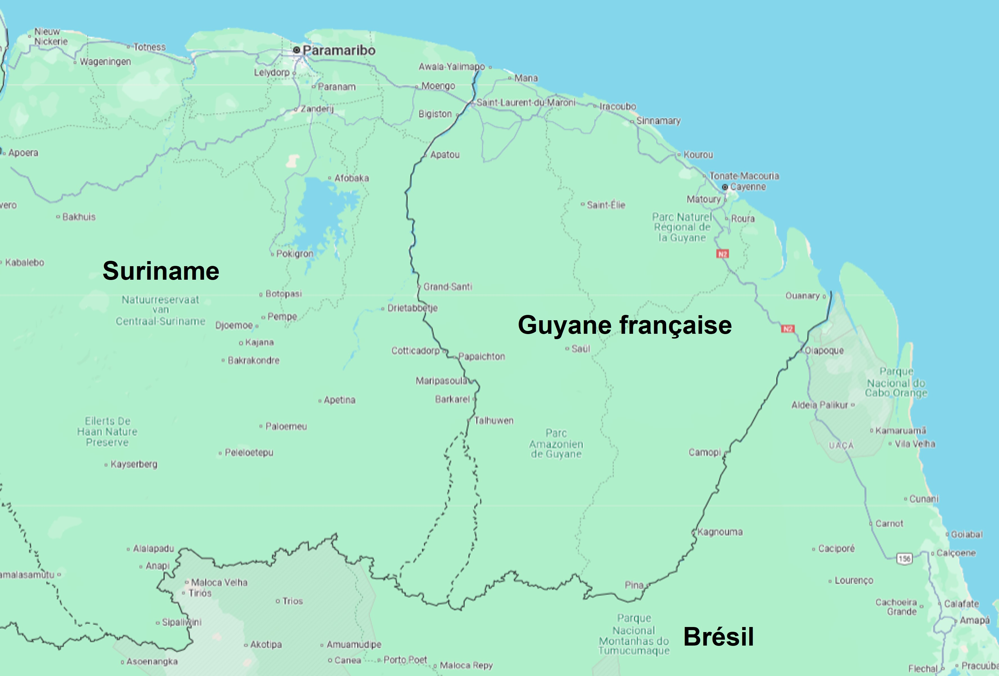
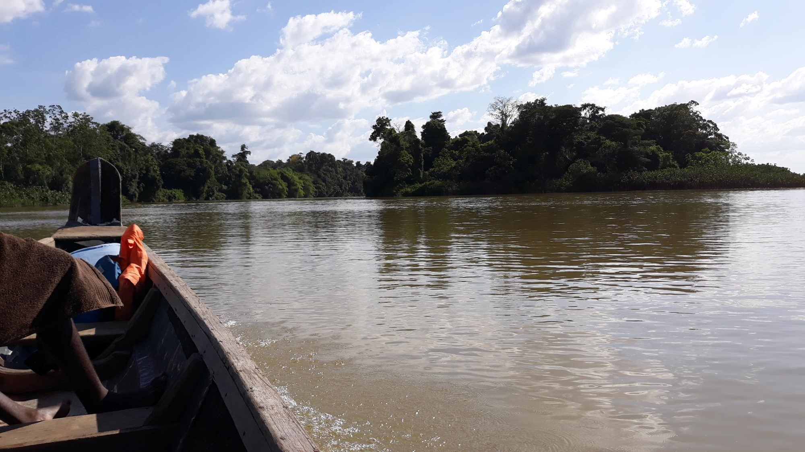
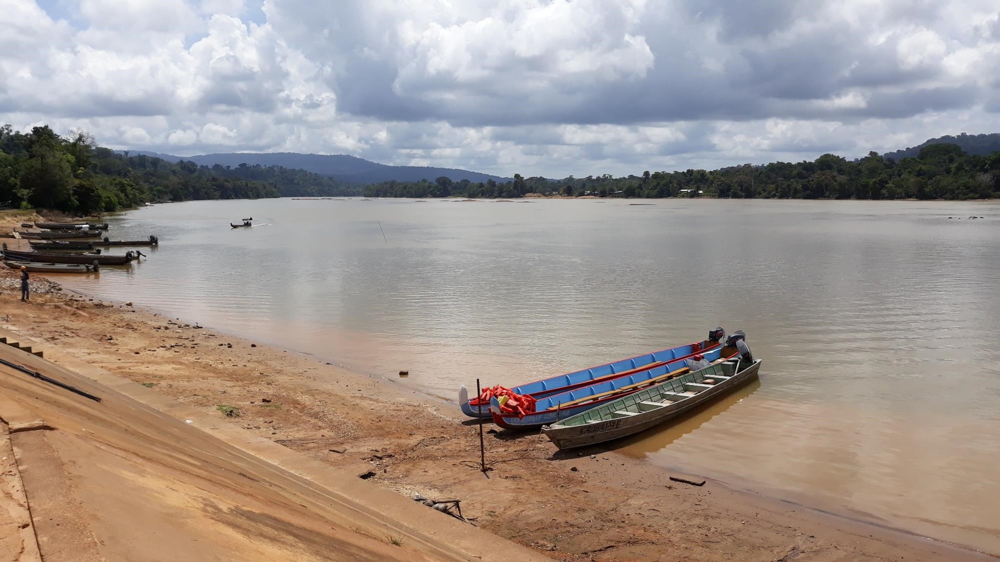
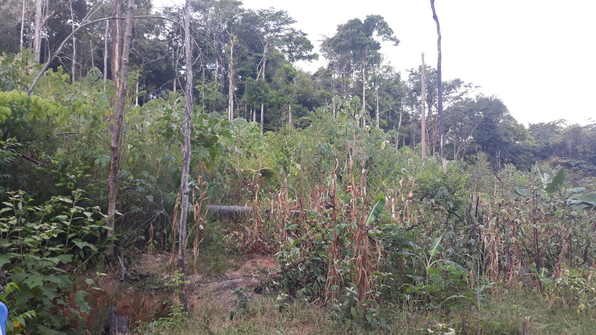
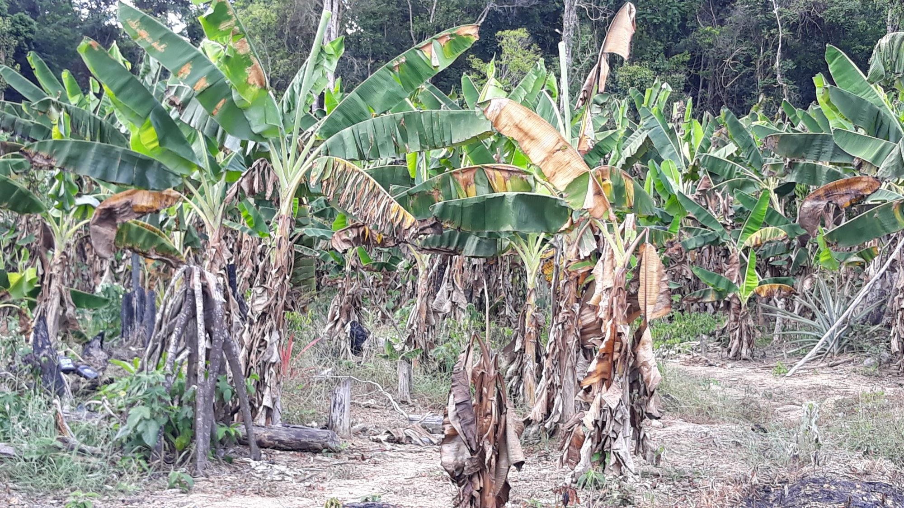
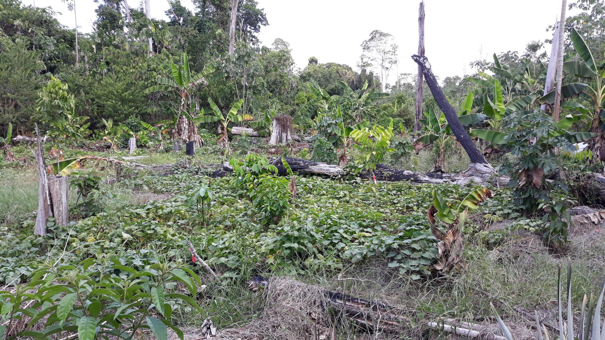
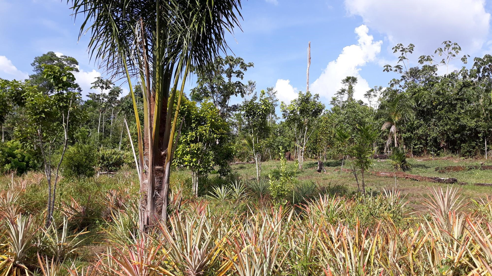

L’agriculture traditionnelle en Guyane
L’abattis itinérant,
une agriculture vivrière traditionnelle en Amazonie
L’abattis pour produire les végétaux, la chasse et la pêche pour les produits carnés. Voilà ce qui a longtemps été le seul modèle des peuples amérindiens afin de produire leur nourriture. Cette agriculture subsiste jusqu’à nos jours. Voici un bref aperçu du fonctionnement d’un abattis.
D’abord, prenons l’avion pour la Guyane
Après 9 heures de vol, nous voici en Guyane. Ce département français est très vaste, avec plus de 80 000 km² (soit environ la même superficie que la région Nouvelle Aquitaine). La Guyane est très peu peuplée (300 000 habitants environ) et couverte à plus de 90% par la forêt amazonienne.
Maintenant, embarquons dans une pirogue, et remontons le fleuve Maroni
Après quelques heures de navigation parfois périlleuse,
Nous voici sur le haut Maroni, entre Grand Santi et Maripa Soula
Débarquons à Papaïchton, et laissons nos pirogues sur le fleuve. En route vers les abattis.





L’abattis, une valse à 3 temps…
Le premier temps : La génèse d’un abattis…
Le 2ème temps : l’exploitation de l’abattis
On commence par planter le manioc, base de l’alimentation bushinenguée, il faudra environ 18 mois pour commencer la récolte.
Ainsi que les bananiers; les bananes sont utilisés comme fruits ou comme légumes après cuisson (attention ! ce ne sont pas les mêmes variétés)
On trouve aussi des patates douces, dont la récolte est assez rapide, moins de 10 mois après plantation.
Et des plantations d’ananas, d’arbre fruitiers, et de palmiers à graines.
Et parfois quelques cultures spécifiquement dédiées à la vente, comme ici le bissap (sorte d’hibiscus) dont la fleur est utilisée pour fabriquer des confitures.



